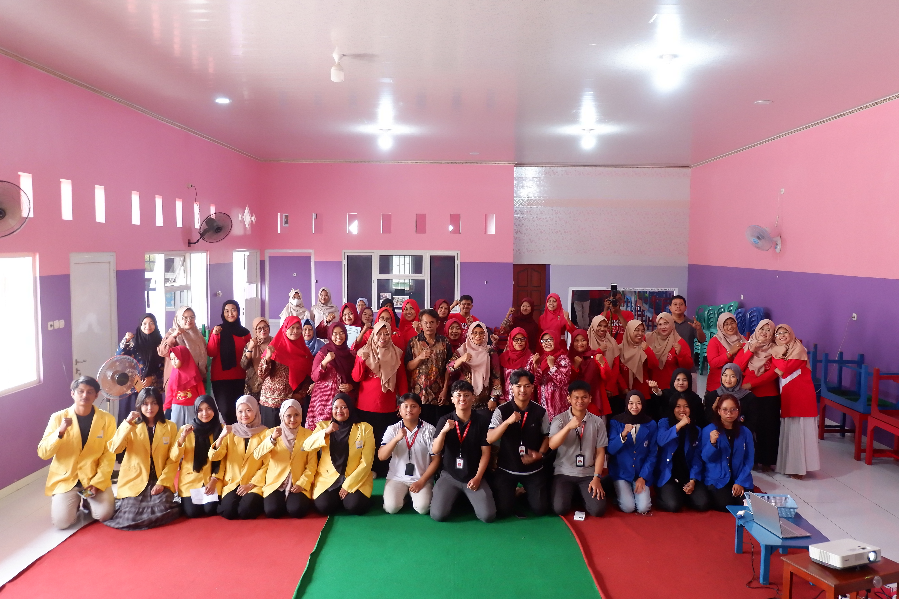

Kegiatan
Workshop Paud: Tingkatkan Public Speaking Guru di Pedurungan
Pelatihan kemampuan berbicara di depan umum bagi guru-guru PAUD se-Kecamatan Pedurungan.
25 Jul 2025
Baca Selengkapnya
 Kegiatan
Kegiatan
Asah Logika Anak: Sempoa Hadir Setiap Senin di KB-TK Al Fath
Kegiatan ekstrakurikuler Sempoa rutin melatih kemampuan berhitung dan konsentrasi siswa KB dan TK.
11 Agu 2025
Baca Selengkapnya
 Spesial
Spesial
Semarak Merah Putih: Lomba 17 Agustusan KB-TK Al Fath
Siswa KB dan TK merayakan Hari Kemerdekaan dengan lomba seru yang mengasah motorik dan logika.
12 Agu 2025
Baca Selengkapnya
 Kegiatan
Kegiatan
Belajar Finansial Dini: Outing Class di Swalayan Gajah Mungkur
Siswa KB dan TK belajar langsung proses transaksi jual beli dan diakhiri lomba kreativitas.
13 Agu 2025
Baca Selengkapnya
Pengumuman
Peletakan Batu Pertama Pembangunan Masjid dlingkungan KB-TK Al Fath
Dimulainya pembangunan masjid di lingkungan KB-TK Islam Al Fath.
05 Okt 2025
Baca Selengkapnya